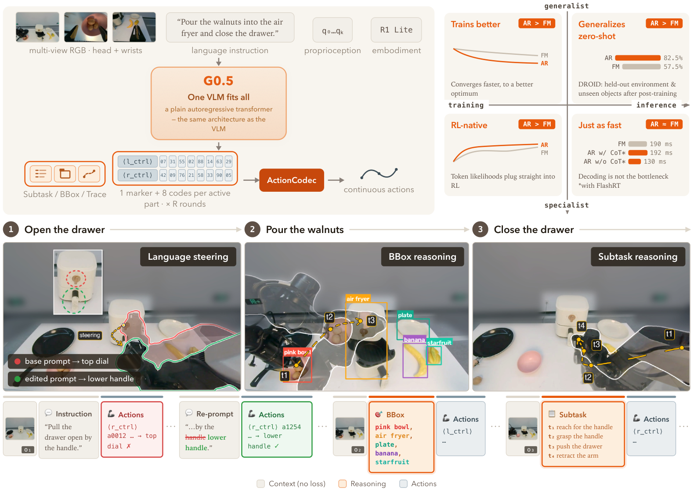
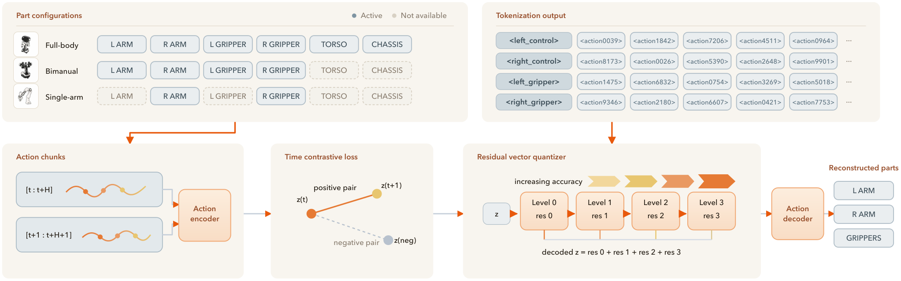

제출: 2026년 8월 12일 · 14개 임바디먼트 사전학습 · R1-Lite/R1-Pro 실로봇 · BEHAVIOR Challenge 우승
한 줄 요약 (TL;DR)
π0·π0.5·GR00T처럼 비전-언어 모델(VLM) + 별도 flow-matching action expert로 두 갈래를 가진 최근 VLA 관행을 버리고, 단일 트랜스포머 디코더가 추론 토큰과 액션 토큰을 하나의 자기회귀 스트림으로 같은 next-token 손실로 뱉게 한다. 학습형 RVQ(잔차 벡터 양자화) 액션 토큰(27차원, 5부분으로 구조화)으로 이종 로봇을 한 어휘에 담고, CoT(subtask/bbox/trace/actionHint) 4종을 추가 손실 없이 그냥 시퀀스에 섞어 함께 학습. R1 실로봇 76.7%(π0.5 53.3%), BEHAVIOR 챌린지 50태스크 31.4%(우승자 26.1% 상회), LIBERO 98.9%, SimplerEnv-Bridge 87.3%, DROID zero-shot 82.5%.
1배경 · 문제의식
최근 VLA(Vision-Language-Action, 화면·언어·액션을 한 모델에서 다루는 정책)는 대부분 "VLM은 인코더로 쓰고 그 위에 flow matching 전문가를 얹어 액션만 별도로 생성"하는 두 갈래 구조다. 이 방식은 (a) 두 갈래를 잇는 어댑터/디스틸레이션이 복잡하고, (b) 추론(CoT)을 붙이려면 flow head와 별도 목적을 관리해야 한다. G0.5는 "그럴 필요 있나?"에서 출발 — VLM 자체가 액션도 뱉게 만들어 하나의 스트림·하나의 목적으로 통합한다.
직관: 두 개의 뇌(추론용 + 액션용)를 어댑터로 이어 붙이는 대신, 같은 뇌가 말도 하고 손도 움직이도록 만든다. 대신 손 움직임을 "말할 수 있는 언어"(= 이산 액션 토큰)로 바꿔야 한다. 이 논문의 대부분 설계는 그 이산화와 여러 로봇 공유를 잘하는 방법에 대한 것.
2핵심 Contribution
학습형 크로스-임바디먼트 액션 토크나이저 (RVQ, 27차원 구조 분해) — 액션을 좌팔 제어(9) + 좌그리퍼(1) + 우팔 제어(9) + 우그리퍼(1) + 하체(7)의 5개 의미 파트로 나누어 이질적 로봇이 하나의 어휘 공유. "active-part prediction"으로 사용 안 하는 파트는 토큰 자체를 생략 → 추론 오버헤드 감소.
Native CoT stream (자기회귀 스트림 안의 4가지 추론 원시) — Subtask · BBox · Trace · ActionHint의 4종을 액션 토큰 앞에 같은 cross-entropy 손실로 생성. "사전학습에 보조 회귀 목적도 전문가 디스틸도 없다."
Visual Memory 모듈 — π0.7·MEM처럼 비전 트랜스포머 4개 층마다 공간-시간 분리 attention으로 다초 history 주입. 최종 층에서 과거 토큰은 폐기 + 학습 시 과거 프레임 30% 확률 dropout으로 배포 시 단일 프레임도 가능.
단일 정책이 4-체크포인트 앙상블 우승자 능가 — 2025 BEHAVIOR 챌린지 50 태스크에서 G0.5(1 epoch) 0.2904, 4 epoch 0.3136으로 우승자(0.2605)를 상회.
3Method
액션 토크나이저: 5부분 RVQ
RVQ(Residual Vector Quantization, 벡터 양자화를 잔차에 여러 번 반복해 세밀도를 높이는 이산화 기법)를 27차원 전신 액션에 학습형으로 적용. 평평한 flat 인코딩 대신 의미 파트별 분해:
Left control
9차원 (팔 관절/EEF)
Left gripper
1차원
Right control
9차원
Right gripper
1차원
Lower body
7차원 (하체 이동/자세)
고정형 팔은 하체 토큰을 아예 안 뽑고, 이동 로봇은 다 뽑는 식으로 active-part만 예측해 시퀀스 길이를 줄임.
Native CoT: 4개 원시
Subtask: 원자 서브태스크로 분해
BBox: 대상 물체의 bounding box(경계 상자) 위치
Trace: 2D end-effector(집게 끝) 이동 경로
ActionHint: 고수준 동작 서술 (예: "왼팔로 들어 올려", "수직으로 눌러")
이 8가지 CoT 조합(어떤 CoT를 켜느냐)이 모두 동일한 next-token cross-entropy로 학습돼 배포 시 사용자가 필요한 CoT만 골라 실행 가능(추가 학습 불필요).
Visual Memory
π0.7 / MEM에서 차용한 factorized spatial-temporal attention(공간·시간을 분리해 각각 계산 → 계산량 절감)을 비전 트랜스포머 4개 층마다 삽입. 최종 층에서 과거 토큰은 폐기 → 언어 모델 입력은 현재 프레임 크기 유지. 학습 시 30% 확률로 과거 프레임 dropout → 배포 시 단일 프레임에도 강건.
데이터 & 자동 라벨
사전학습 로봇
14개 임바디먼트 (실+시뮬), pick-and-place 위주 롱테일. DROID는 사전학습에서 제외.
자동 라벨 파이프라인
키프레임 분할 → Gemini 3·Doubao Seed 2.0 Pro가 action hint/task 설명 생성 → SAM3로 프레임별 bbox 추적 → forward kinematics로 3D EEF 궤적을 이미지 평면에 투영
웹 공동학습
Generic VQA (38~42K) + Embodied VQA (40~42K) + 자체 라벨을 액션 위주 mixture로 혼합, 모두 cross-entropy
25~30 point 격차. 미학습 환경 zero-shot이 다른 파운데이션 모델보다 훨씬 강함.
Pick-and-Place 언어 추종 (R1-Lite, 64 실환경 trial)
50H 사후학습: G0.5 84.4% 언어 추종 / 75.0% 태스크 성공 (π0.5 68.8% / 65.6%)
대상 시각 문맥 제공 시: 98.4% 언어 추종 / 84.4% 태스크 성공
5Ablation (주요 발견)
Zero-shot CoT 효과: 단일 스테이지 PP Bench에서는 CoT 효과 미미(~1.6%p). 그러나 Air Fryer · Cook Bacon 같은 5스테이지 가사 태스크에서 AR+CoT 진행도 3.8 / 3.4 vs AR only 2.4 / 1.5로 1.6~2배. 언어 추종도 비례 향상.
AR head vs FM head: 옵션으로 flow-matching head를 함께 학습해도, "AR이 FM보다 CoT를 더 잘 따른다." → 통합 목적의 강점.
지시 표현 감도(정성): 부사 수식어("push hard", "vertically")와 동사 치환("press" vs "close")이 zero-shot 가사 태스크 성공률에 뚜렷한 영향 → 추가 학습 없이 프롬프트로 행동 조향 가능.
사전학습 분포 정렬: 사전학습에서 pick-and-place 비중이 높아 해당 성능이 강함. 어플라이언스 상호작용은 상대적으로 약하며 추가 파인튜닝 epoch로 개선.
6핵심 Figure / Table

Figure 1 — G0.5 개요. 단일 트랜스포머 디코더가 CoT 원시(subtask/bbox/trace/actionHint)와 액션 토큰을 하나의 자기회귀 스트림으로 뱉는다. flow-matching 전문가는 없다. (출처: arXiv:2608.11739)

Figure 3 — 학습형 RVQ 액션 토크나이저. 27차원 액션을 5개 의미 파트(좌팔 제어 9, 좌그리퍼 1, 우팔 제어 9, 우그리퍼 1, 하체 7)로 구조 분해. active-part만 예측해 이질적 임바디먼트가 하나의 어휘를 공유. (출처: arXiv:2608.11739)
BEHAVIOR 챌린지 결과가 논문 가장 강력한 근거. 50 가사 태스크에서 단일 정책 G0.5가 4-체크포인트 앙상블 우승자보다 높다는 것은, "flow-matching 전문가를 붙이지 않고 자기회귀만으로도 실사용 장기 태스크가 된다"는 논문의 주장을 뒷받침한다.